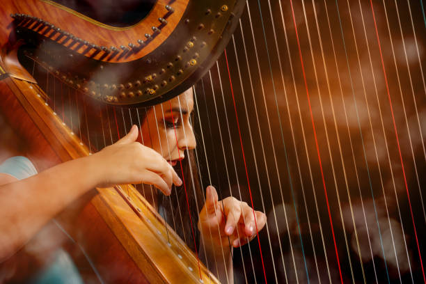

Harp
Harps are classified as composite chordophones. They make sound by plucking strings where sound then vibrates off. A harp player holds the harp closely by leaning it along their shoulder.

Classical Applications
The harp adds more harmonic and melodic support to the orchestra. They are also used to provide shimmering and colorful accents to pieces. Glissandos (a flowing continuous pitch) are quite common to be played on the harp in a piece.

Famous Piece
Lana Del Rey's song Video Games prominenetly features the harp. It acts as an accent to the end of lyrical beats and conveys a melancholic/romantic tone. It is most notable at the beginning of the piece as is here.
Fun Fact!
The harp is believed to be one of the oldest instruments in the world, dating back to ancient Egypt.